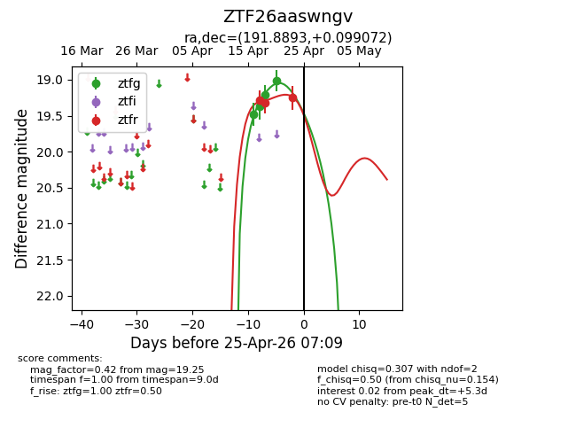
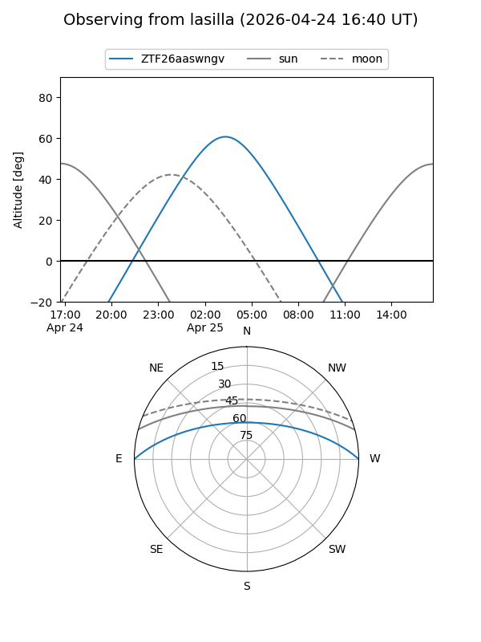
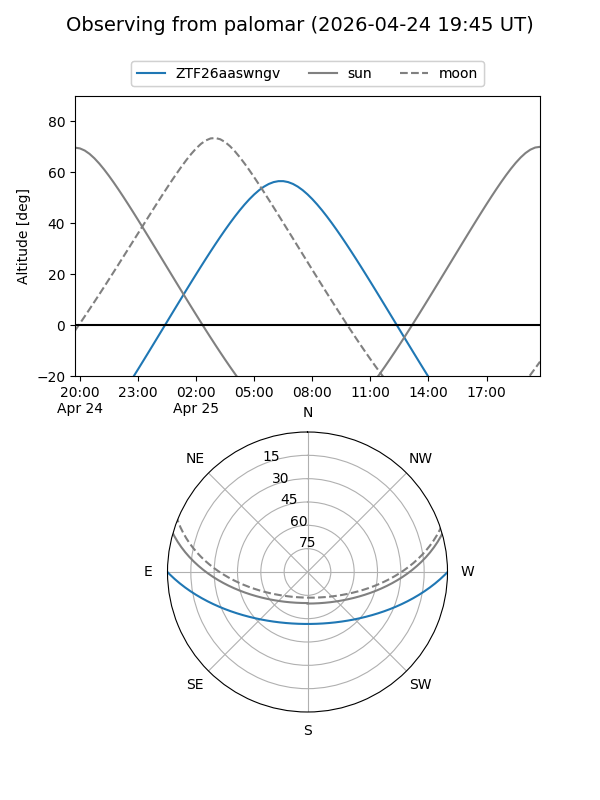
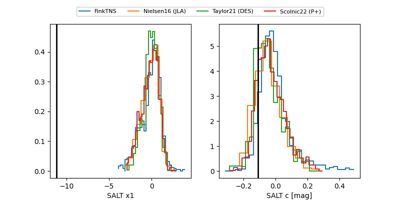

ZTF26aaswngv
Target ZTF26aaswngv at 2026-04-25 07:11
Aliases and brokers:
FINK: link
Lasair: link
ALeRCE: link
alt names
ZTF26aaswngv (ztf,fink_ztf)
Coordinates:
equatorial (ra, dec) = 191.8893,+0.09907
equatorial (HMS+DMS) = 12:47:33.44,+00:05:56.66
galactic (l, b) = (300.7979,+62.95474)
Flags:
Photometry:
last ztfg=19.02, ztfr=19.25
4 ztfg, 3 ztfr detections
Lightcurve

Visibility


Additional plots
